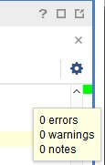
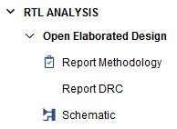

ICE 2: VHDL Half-Adder#
Attention
This exercise functions as a lecture on what VHDL is and how this stuff works. You need to read and not just skip through to find the commands.
If you just bust it out without trying to understand you will suffer greatly when it comes time to do the labs.

Overview#
So far in this course you have been learning how to design basic combinational logic circuits. However, most logic hardware prototyping is done using a hardware description language such as VHDL. VHDL allows you to boil the essence of a hardware schematic down to a few lines of code. In this in-class exercise you will be implementing a half-adder logic design in VHDL.
Objectives#
The objectives of this in-class exercise are for you to:
Implement and test a simple logic design (half-adder) using VDHL
Gain more experience using tools (Git, Xilinx Vivado)
End state#
You will provide a live demo to your instructor or provide proof of functionality to receive credit (Due Lesson 8). You must also turn in the files you used through Git + Gradescope.
Your instructor will be able to view your ICE2 folder through Git. The folder will contain at least the following:
VHDL files used (half-adder implementation and testbench) in a code folder
Constraints (.xdc) file in a code folder
.bit file used to program board
Background#
Recall how a Half Adder works from Half-adder.
VHDL#
VHDL, which stands for Very High Speed Integrated Circuits (VHSIC) Hardware Description Language, is a language that allows you to describe hardware. It was developed in 1981 by the DoD and remains one of the two most common HDLs (the other being Verilog).
It is important to note that VHDL is not a programming language. Again, you use it to describe hardware. Thus, it is important to become familiar with common constructs, or idioms, that allow you to build the desired hardware.
Finally, since you are describing hardware, you should be aware that most statements can be considered concurrent rather than happening sequentially. The exception to this is some statements within a process. More details on VHDL will be provided later in this in-class exercise and throughout the course.
Design flow#
Hardware development is an exercise in moving between layers of abstraction. This means that we will start with a high level of abstraction - i.e. the problem statement of add two bits - and work toward a lower level of abstraction; in this case, how the circuit is actually implemented in hardware.
Vivado will help us describe, simulate, test, and implement the design. The input to Vivado is VHDL. Ultimately, we will use Vivado to emulate the circuit on an FPGA (Field Programmable Gate Array). An FPGA can be programmed to be many circuits.
Setup project
Create design
Test design
Implement design
Download onto FPGA
Setup Vivado Project#
You can create a Viavado project from scratch. This involves telling the suite about three types of files:
Design sources (
.vhd)Constraints (
.xdc)Simulation Sources (
.vhd)
You can also add files to an existing project. For instructions on how to do this, see Manually add files to Vivado Project
But good news we will be using Git to clone an already created project. 🥳🎉
Clone project with Git#
First, open Git Bash and cd to the folder you want to put your project code into.
Remember that this should not be synced to One Drive!
Hint
If you are in Windows Explorer, you can browse to where you want the cloned folder to be created.
Then hold the “Shift” key and right click. On the menu you should now see an option to “Open Git Bash here…”
This is an alternative to the cd command.
Browse to USAFA-ECE/ece281-ice2
Click the Fork button in the upper right.
You should see yourself as the new Owner. Click Create Fork.
This will create a copy of repository under your account.
Click the green <> Code button, HTTPS, and copy the URL
Inside Git Bash, check where you are by “print working directory” by typing
pwd.Inside Git Bash, type
git clonefollowed by the URL you copied.Press Enter. This may cause a login popup window. If it does, select Browser and authorize Git Bash.
Fig. 12 Cloning with Git Bash#
See Appendix > Github real fast if you need help cloning.
Open halfAdder.xpr in Vivado by double clicking on it.
View project in Vivado#
Now that our project is open in Vivado, let’s explore it.
We said earlier that we have
Design sources (
.vhd)Constraints (
.xdc)Simulation Sources (
.vhd)
These were all in the src/ folder of our cloned repo.
You can now see them assigned appropriately under “Sources”
Fig. 13 Vivado sources#
Design sources describe the architecture and behavior of our hardware.
Constraints map the signals and ports we define to actual pins on our Basys board
Simulation sources include test bench files that are used to test our design before we put it on hardware.
Edit your half-adder implementation#
In Vivado open halfAdder.vhd.
Understand file#
File header#
The first thing you will notice is that the file contains a block of
header comments. Comments in VHDL are preceded by -- for
single-line comments, and are colored green or gray by some text editors
(not all editors will do syntax coloring).
Filename, author(s), etc. need to be filled out correctly. Edit as applicable.
--| FILENAME : halfAdder.vhd
--| AUTHOR(S) : Capt Warner
--| CREATED : 01/17/2017
--| DESCRIPTION : This file implements a one bit half adder.
--|
--| DOCUMENTATION : None
The next section of the header shows required files. This file has no specific dependencies.
--| REQUIRED FILES :
--|
--| Libraries : ieee
--| Packages : std_logic_1164, numeric_std, unisim
--| Files : NONE
The final section of the header shows naming conventions to use throughout this course. The purpose of the naming conventions is primarily to make debugging easier and to make it obvious what your signals are used for. For simple designs this is not as important, but it becomes critical when you develop more complex designs. Thus, we develop good habits now.
--| NAMING CONVENTIONS :
--|
--| xb_<port name> = off-chip bidirectional port ( _pads file )
--| xi_<port name> = off-chip input port ( _pads file )
--| xo_<port name> = off-chip output port ( _pads file )
--| b_<port name> = on-chip bidirectional port
--| i_<port name> = on-chip input port
--| o_<port name> = on-chip output port
--| c_<signal name> = combinatorial signal
--| f_<signal name> = synchronous signal
--| ff_<signal name> = pipeline stage (ff_, fff_, etc.)
--| <signal name>_n = active low signal
--| w_<signal name> = top level wiring signal
--| g_<generic name> = generic
--| k_<constant name> = constant
--| v_<variable name> = variable
--| sm_<state machine type> = state machine type definition
--| s_<signal name> = state name
Included libraries#
The next section shows a few libraries that we are adding for use. These statements are very similar to importing modules or includes in other languages.
The ieee std_logic library will be our 🍞 and 🧈
library ieee;
use ieee.std_logic_1164.all;
use ieee.numeric_std.all;
Modify half-adder entity#
Remember the half-adder schematic in Fig. 1. This is what we are trying to create.

But! This conceptual device has no way for us to interact with it. However, if we go one level of abstraction lower:
We will map switches to inputs
We will map LEDs to outputs
Now we can redraw our schematic as a block diagram:

Fig. 14 Half-adder entity block diagram#
In VHDL this is called an entity.
An entity in VHDL is a declaration of a hardware module’s input and outputs. In other words, it describes the interface of a “black box”.
The code comes with a partially completed entity description.
-- entity name should match filename
entity halfAdder is
port(
i_A : in std_logic; -- 1-bit input port
i_B : in std_logic;
o_S : out std_logic -- 1-bit output port
-- (NOTE: NO semicolon on LAST port only!)
-- TODO: Carry port
); -- the semicolon is here instead
end halfAdder;
Warning
We just mad a big jump in terms of abstraction.
If you don’t understand why the funny pants looking thing
is the halfAdder entity, talk it over with a classmate now.
Note
The port names are preceded by an i_ for input and an o_ for
output per the naming convention in our file header.
The inputs and output ports are signals described by the pattern
<portName> : <mode> <signalType>
Std_logic and std_logic_vector are the two most common types you
will use. They produce logical signals of 1 or 0, where the vector
is more like a bus (multiple digital signals in parallel).
Add an output for the Carry named
o_Cout, as directed by the TODO
Modify the half-adder architecture#
The architecture is the guts of an entity. It is the internal logic that makes it do something.
Recall our logic equations for the half-adder are
We can directly represent this in architecture with an AND and XOR gate.
Fig. 15 Architecture of half-adder#
Again, we have gone to a lower level of abstraction. We are looking inside the black box entity that we described above.
Our architecture is partially realized in the given VHDL code below:
architecture halfAdder_arch of halfAdder is
-- this is where you would include components declarations and signals if you needed them
begin
-- this is where you would map ports for any component instantiations if you needed to
-- *concurrent* signal assignments
o_S <= i_A xor i_B;
-- TODO: Carry signal assignment
end halfAdder_arch;
Note, the architecture is “of halfAdder” since that is the name of the component the architecture is for. Since this is a simple design, the architecture’s behavior can be described with only two lines of code. The first assignment statement is provided.
Add the second statement required to implement
o_Cout.
Participation activity 7.2.5 in your zyBook may be helpful if you are stuck.
Save the file.
Test design#
At this point your testbench VHDL file halfAdder_tb.vhd should already
be added. If not, go back and add it per the directions in Manually add files to Vivado Project.
Tip
Generally, your testbench files will have the same name as the component you are testing with them but with a _tb at the end.
Edit your half-adder testbench#
Open your testbench file in a text editor. Note the header has
halfAdder.vhd as a REQUIRED FILE.
The entity in this file is the testbench itself, which is empty as shown below.
entity halfAdder_tb is
end halfAdder_tb;
It is empty because it does not need any external interfaces. Instead, we want to observe the signals generated by the hardware components inside the testbench. We get to peek inside the black box!
These hardware unit under test (UUT) inputs will then be stimulated by the testbench internal architecture, which realizes our test signals. To do this, first we must declare what hardware components will be inside of our test bench:
architecture test_bench of halfAdder_tb is
-- declare the component of your top-level design unit under test (UUT)
component halfAdder is
port(
i_A : in std_logic; -- 1-bit input port
i_B : in std_logic;
o_S : out std_logic -- 1-bit output port
-- (NOTE: NO semicolon on LAST port only!)
-- TODO: Carry port
); -- the semicolon is here instead
end component;
This syntax is almost identical to what you saw in the implementation file. The only difference is now the halfAdder is called a component instead of an entity. Thus, you can copy in the port information from your implementation file to the corresponding component in your testbench.
Now that your halfAdder hardware is inside your testbench entity, we are going to declare some additional signals that correspond to the switches and LEDs per our previous block diagram Fig. 14
You can think of these signals as wires that we place inside our testbench box. This is partially realized in the given testbench snippet shown below.
Since these are top level wires, we will prepent the names with w_.
The code also sets an initial value of ‘0’.
-- declare signals needed to stimulate the UUT inputs
signal w_sw1 : std_logic := '0';
-- TODO: sw0 signal
-- also need signals for the outputs of the UUT
signal w_led1 : std_logic := '0';
-- TODO: led0 signal
Declare the two missing signals.
So, now we have a testbench box with a half-adder component and four wires in it. Nothing is connected yet. To actually “wire up the hardware”, we need to map the ports. This is partially realized in the code snippet below.
begin
-- PORT MAPS ----------------------------------------
-- map ports for any component instances (port mapping is like wiring hardware)
halfAdder_inst : halfAdder port map (
i_A => w_sw1, -- notice comma (not a semicolon)
i_B => w_sw0,
o_S => w_led0 -- no comma on LAST one
-- TODO: map Cout
);
Wire up the
o_Coutsignal tow_led1.
Now all that is left is to assign values to the test input wires (w_sw0
and w_sw1) inside the test plan process:
The test plan process is a sequential plan that will drive inputs to the values we specify. It will then record the resulting outputs.
We use the assert statement to automatically check that our values are what we expect.
Hint
The assert statement can be read as “assert this is true, and if it isn’t then report this message.”
We should write the message to be helpful to ourselves while debugging. There are other severity levels, but we will use “error” here. The “error” level generates a message but will continue to execute the test instead of exiting immediately. We could use “failure” - which would immediately halt the test - but that can make debugging difficult.
-- Test Plan Process --------------------------------
test_process : process
begin
w_sw1 <= '0'; w_sw0 <= '0'; wait for 10 ns;
assert w_led0 = '0' report "bad sum" severity error;
assert w_led1 = '0' report "bad carry" severity error;
w_sw1 <= '0'; w_sw0 <= '1'; wait for 10 ns;
assert w_led0 = '1' report "bad sum" severity error;
assert w_led1 = '0' report "bad carry" severity error;
w_sw1 <= '1'; w_sw0 <= '0'; wait for 10 ns;
assert w_led0 = '1' report "bad sum" severity error;
assert w_led1 = '0' report "bad carry" severity error;
-- TODO: rest of test plan
wait; -- wait forever
end process;
How many test cases do we need for this circuit?
Implement the rest of the test plan. Save the file.
Check syntax#
While you edit your code in Vivado, it checks the syntax. If everything is good you should see a green box in the upper right-hand corner of your editor window. If you hover your mouse over the green box you will see that there are 0 errors. Otherwise, red marks along the right-hand margin indicate locations of syntax errors.

Test project#
Testing our project involves simulation and viewing schematics.
Simulate project#
In the Flow Navigator (the left panel), right click on “Run Simulation” and select “Simulation Settings”
Click on the Simulation tab and change the runtime to 50 ns or an otherwise appropriate length based on your test plan process. Click OK.

Left click on Run Simulation and then click on Run Behavioral Simulation. You can ignore/cancel any firewall access popups
If for some reason a waveform window did not pop up, check the Messages and Log tabs near the bottom of your window. Look for error messages.
Once the waveform window is in view, click on the Zoom Fit icon or adjust the zoom window as needed to see the time periods of interest

Verify that the waveforms show your design is working correctly (inputs and outputs should match truth table)
Optional#
Try changing the outputs to different colors by right clicking on the signals and selecting Signal Color.
Rename signals to show what they correspond to (e.g., A) and define virtual busses for your inputs and outputs as shown in the figure below. To define a virtual bus, simply highlight multiple signals and right click. Then, select “Virtual Bus” and name it as desired.

Note, the wave editor also allows you to view data in different formats. Right click on a number in the “Value” column and select Radix.
Remember wave configuration#
Since you put in all of that work to have a nice wave form, you can optionally save your wave configuration file (File –> Save Wave Configuration or simply click on the Save icon in the editor). Saving it to the main project folder is fine. Click OK to add it to your project. Now future runs of your simulation will use the same settings!
RTL and Technology Schematics#
View RTL Schematic#
A Register Transfer Level (RTL) schematic is a gate-level schematic that shows you how your VHDL code is initially being interpreted. It is important to verify that the circuit matches what you expect. Note, this schematic is not optimized for your hardware chip.
In the Flow Navigator (right panel), click on the RTL Analysis Schematic. Click OK to continue.

Technology Schematic#
Now that you have verified that your design is functionally correct, it is time to verify that the synthesized hardware is correct by viewing the technology schematic. This schematic, unlike the RTL one, is optimized for your specific hardware platform (i.e., it shows your design in terms of FPGA logic elements).
Click on “Run Synthesis” in the Flow Navigator – this is going to take some time (a few minutes) – while the synthesis is running, a green arrow will appear to the left of Run Synthesis (and a message at the upper right) and the options will be disabled.
After the process completes, click on Schematic to view the optimized schematic for your FPGA chip as shown in the picture provided on the next page.

Notice that each port is connected to a buffer and that some of your logic (i.e., the XOR) is realized using a lookup table (LUT). If you click on any of the two LUTs you should see, you also can view their associated truth table by clicking on the “Truth Table” tab at the bottom of the “Cell Properties” sub-window.
Notice an equation is also given for the output.

Fig. 16 Synthesis lookup table#
Do the truth tables for the LUTs make sense for your design?
If all of your testing succeeded…
stage and commit your files with git
Implement design#
Edit the constraints file#
Click on the Project Manager in the Flow Navigator
Double click on the Basys3_Master.xdc file in the Sources sub-window to open it.
Get your BASYS 3 board out and look at the text surrounding the switches and LEDs. Note, the labels underneath the switches are the physical pin locations on your BASYS 3 board. For example,
SW0is connected to pinV17. Find (use CTRL+f)V17in the constraints file. You should see it first on line 12 as shown below.
#set_property PACKAGE_PIN V17 [get_ports {sw[0]}]
#set_property IOSTANDARD LVCMOS33 [get_ports {sw[0]}]
Replace the sw[0] with the name of the node (signal) that should connect to the switch.
In this case, we want to connect i_B from our halfAdder entity to this
switch. In the future we will utilize the sw[0] naming convention
so changing the xdc file may not be required.
Note
The node names correspond to the signal names you defined for your half-adder interface in halfAdder.vhd and NOT the signal names in your testbench.
Uncomment the two lines by removing the # signs. The final result
should look similar to below:
## Switches
set_property PACKAGE_PIN V17 [get_ports {i_B}]
set_property IOSTANDARD LVCMOS33 [get_ports {i_B}]
connect
sw[1]toi_Aconnect
led[0]too_Sconnect
led[1]too_Cout
Save the constraints file (CTRL+s)
Implement and generate bitstream#
In the Flow Navigator, click on Generate Bitstream
Click YES to run Synthesis and Implementation as required and then OK to start the job
The upper right-hand of the Vivado window will show a quick view of the status

You should get a window reporting successful Bitstream Generation.
Download onto FPGA and test#
Plug in your BASYS 3 board and turn it on using the switch on the board next to the USB connector. If you don’t see numbers on the LED displays, consult an instructor.
Verify the drivers installed correctly. You may need to turn off Windows Memory Integrity.
Open the Hardware Manager (bottom of Flow Navigator)
Click on the Open target link and then click on Auto Connect

Click on Program device

By default the Bitstream (
.bit) file that you last created will be selected for programming. Click ProgramAfter a successful program, test your design by flipping switches and verifying that the LED outputs are correct.
If your hardware works correctly, demo it to an instructor.
Alternatively, you may document your functionality by taking a short video or a series of pictures. Include the documentation in your README (a link is fine for a video).
Note
Your FPGA will not maintain its programming after it loses power.
Tip
Instead of opening your project for programming in the future,
you can directly open the Hardware Manager from the main Vivado
menu. Simply select the correct .bit file.
Commit your README changes along with your
.bitfile. Use what you learned in BCE0 and the “Git Real Fast” guide! Push your changes to your remote repository on Github Verify the Github Action ran successfully.
Tip
Github Actions are verification code that runs whenever you push anything to Github. If you open your repository on GitHub and click on the “Actions” tab, you should see one Action run for each time you pushed. A green check mark ✅ confirms that your code passes all tests!
Wrapping up#
Double check that you have everything committed to your git repo.
Then push your changes to your repo.
Make sure all your work appears on GitHub as you expect
Verify that the Action ran successfully on GitHub.
Go to ICE 2 on Gradescope
Submit your code by pointing Gradescope to your GitHub repository.
Check to make sure the autograder ran.
When all is said and done, you should have working VHDL submitted into Gradescope via GitHub and have demo’d to your instructor.
Congratulations, you have completed In Class Exercise 2!